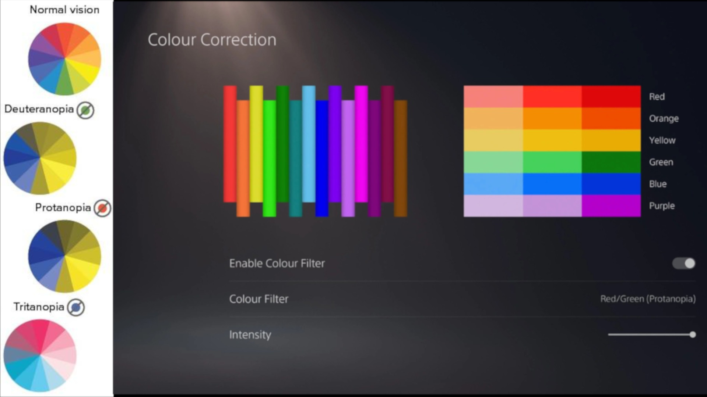

Applications for CleverBridge
CleverBridge, with its diverse customer base, requires many solutions for their clients.
CleverBridge, with its diverse customer base, requires many solutions for their clients.
CleverBridge can utilize 3D audio to help support their customers

Here is an example of the song Tek It by Cafune.

Here is another example of 3D audio in use from the game Fortnite.
ColorBlind features such as the one present in the PS5 can help disabled employees to work withoutany hinderances,

An example from the 2020 video game The Last of Us Part 2.
Captions that describe the audio for audibly impaired people can prove to be beneficial since it lets them work without any interruptions or extra support.

A screengrab from Stranger Things showing Audio Descriptive captions being used.